- Tuletko MacDivestaMikä tiedosto viedään ja miten siirryt menettämättä mitään.
- Lataa tietokoneeltaShearwater ja muut Bluetooth-tietokoneet tai kaapeli Macilla.
- Garmin DescentTuo .fit-tiedostot kellosta tai Garmin Connectista.
Eikö jokin toimi? Katso Vianmääritys. Thermocline on lokikirja: se näyttää, mitä sukellustietokoneesi tallensi, eikä koskaan laske dekompressiota.
Hanki sovellus
Thermocline on vain Apple-laitteille: iPhonelle, iPadille, Macille ja Apple Watchille. Betan aikana se asennetaan Applen TestFlight-sovelluksella.
| Tehtävä | iPhone ja iPad | Mac |
|---|---|---|
| Liity betaan | Liity betaan: yksi linkki iPhonelle, iPadille, Macille ja Apple Watchille. Avaa se jokaisella laitteella ja asenna TestFlightista. Apple Watch -sovellus tulee iPhone-sovelluksen mukana. Kaikki laitteet jakavat saman lokikirjan iCloudin kautta. | |
| Liityit iPhone-betaan ennen 18. marraskuuta 2026 | Se sovellus on siirtynyt. Katso siirtyminen vanhasta iPhone-sovelluksesta. | |
| Pysy ajan tasalla | Kun TestFlight tarjoaa uuden buildin, päivitä jokainen käyttämäsi laite. Vanhempi build lakkaa lähettämästä muutoksia, kunnes se päivitetään, ja kertoo siitä. Mitään ei menetetä. | |
Ensimmäinen käynnistys ja esittely
Ensimmäisellä käynnistyskerralla kysytään nimesi, yksikkösi ja mistä sukelluksesi tulevat. Yksiköt tallennetaan metrisinä; niiden vaihtaminen muuttaa vain näyttötapaa.
| Tehtävä | iPhone ja iPad | Mac |
|---|---|---|
| Asetukset | Profiili-välilehti | Thermocline → Asetukset |
| Esittely | Profiili → Ohje → Näytä esittely | Ohje → Katso esittely |
Esittely käy läpi jokaisen näkymän esimerkkilokikirjalla, ei omallasi.
Tämän sivun kuvakaappaukset näyttävät esittelyn esimerkkilokikirjan: sukellukset ja kohteet ovat keksittyjä. Napauta kuvaa nähdäksesi sen täysikokoisena.

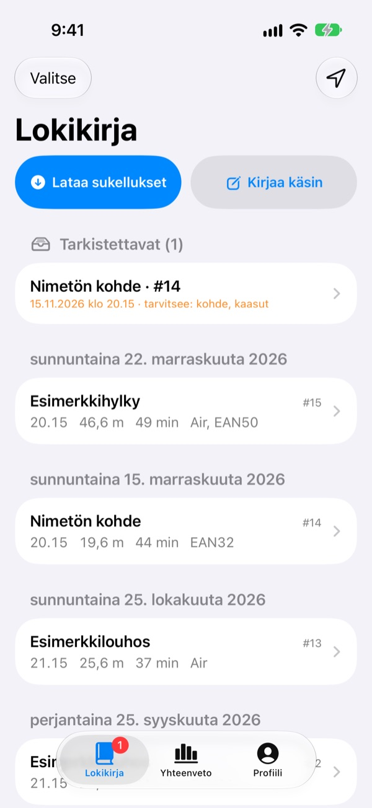
Tuo lokikirjasi
Thermocline lukee MacDiven (sen kansion, XML:n tai UDDF:n), Shearwater Cloud -tietokannan, Garminin .fit-tiedostot, UDDF:n mistä tahansa lokikirjasta ja CSV:n. Valitset itse lisättävät sukellukset, ja kaikki, mitä se ei pysty lukemaan, luetellaan, eikä mitään jätetä pois hiljaa.
| Tehtävä | iPhone ja iPad | Mac |
|---|---|---|
| Tuo tiedosto | Profiili → Tietosi → Tuo lokikirjatiedosto ja valitse se sitten iCloud Drivesta tai Tiedostoista. | Arkisto-valikon tuontikomento (⇧⌘I). |
| Garminin .fit-tiedostot | Valitse useita kerralla. | Valitse useita tai kokonainen kansio. |
| MacDiven kansio kuvineen | Vain Mac. Tuo kuvat myöhemmin Mac-sovelluksella. | Arkisto → Tuo MacDivesta… ja valitse MacDiven kansio: sukellukset, sukelluskuvat ja korttien kuvat. MacDiven tiedostoja ei muuteta. |
| Valitse sukellukset | Poista valinta niiltä, joita et halua, ja valitse sitten Tuo. | |
| Kumoa tuonti | Palautuspiste Ennen tuontia, joka tallennetaan ennen jokaista useamman kuin yhden sukelluksen tuontia. | Kumoa tuonti… tuontiraportissa tai sama palautuspiste. |
Kun tuonti on valmis, raportti näyttää, montako sukellusta lisättiin, mitkä kohteet jäivät tuomatta ja miksi sekä mitä pitää tarkistaa. Sukellukset, joiden tiedostossa ei ollut kaasua, odottavat kohdassa Tarkistettavat.
Mitä MacDive-tiedostoa käyttää
MacDive voi antaa XML:n, UDDF:n tai (Macilla) koko kansionsa. Ne eivät sisällä samoja asioita:
| Mitä se sisältää | MacDive XML | MacDive UDDF | MacDive-kansio (Mac) |
|---|---|---|---|
| Sukellukset, kohteet, sukellusparit, kaasut | Kyllä | Kyllä | Kyllä |
| Pullojen koot | Kyllä | Ei: sen koot eivät ole vesitilavuuksia, joten ne jätetään tyhjiksi | Kyllä |
| Syvyysprofiilit | Kaikki sukellukset | Kaikki sukellukset | Kaikki paitsi sukellukset, jotka MacDive latasi iPhonella tai iPadilla ja jotka se tallentaa salattuina |
| Tietokoneen NDL ja ppO₂ sukelluksen ajalta | Kyllä | Ei | Kyllä, paitsi salatut sukellukset |
| Tietokoneen CNS | Kyllä | Ei | Kyllä |
| Varusteet, tunnisteet ja sukellustyypit | Kyllä | Ei | Kyllä |
| Sukellus- ja korttikuvat | Ei | Ei | Kyllä |
| Tehtävä | iPhone ja iPad | Mac |
|---|---|---|
| Paras reitti | Vie sukelluksesi MacDivesta XML-muodossa, tallenna tiedosto iCloud Driveen ja tuo se. | Tuo MacDiven kansio ja sitten XML sen päälle. XML täydentää salattujen sukellusten profiilit, NDL:n ja ppO₂:n. |
| UDDF on jo tuotu | Tuo myös XML. Lokikirjassasi jo olevat sukellukset tunnistetaan eikä niitä lisätä uudelleen, ja vain puuttuvat tiedot täydennetään, myös pullojen koot. Mitään syöttämääsi tai korjaamaasi ei muuteta. | |
Garmin Descent -kellot
Garmin Descent tallentaa yhden .fit-tiedoston sukellusta kohden. Ne saa kahdella tavalla:
- Kellosta: kytke se Maciin sen kaapelilla ja avaa kansio GARMIN → Activity. Macilla voit tuoda koko GARMIN-kansion; tiedostot, jotka eivät ole sukelluksia, kuten juoksut ja asetukset, ohitetaan.
- Garmin Connectista: avaa sukellus ja valitse Vie alkuperäinen. Saat .zip-tiedoston: pura se ensin ja tuo sitten sen sisällä oleva .fit-tiedosto.
Sijainnit tulevat kellon GPS:stä. Virtasukelluksella kello tallentaa alkupisteeksi paikan, jossa nousit pintaan; tuonti etsii paikan, josta oikeasti menit veteen, joten sukellus yhdistetään siihen kohteeseen. Lisää muut ohittamasi hylyt muistiinpanoihin.

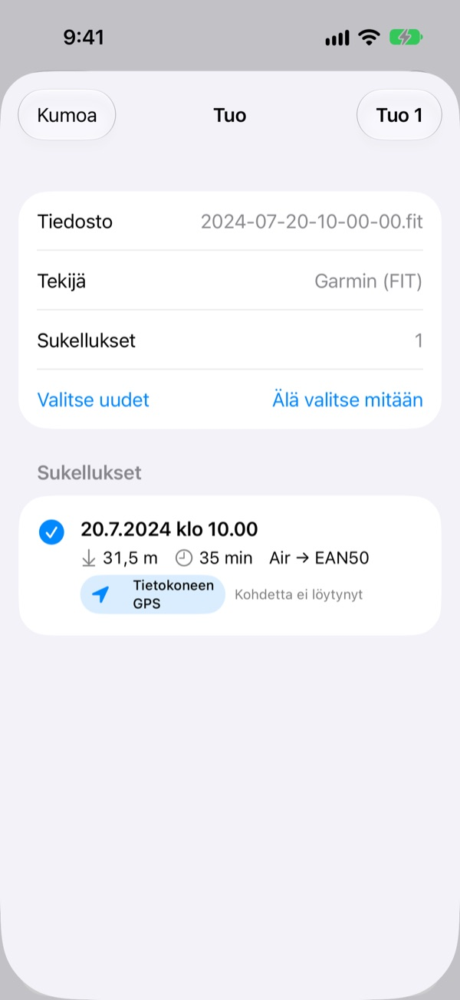
Lataa sukellukset tietokoneeltasi
Laita sukellustietokone ensin Bluetooth-tilaan. Shearwaterissa: Menu → Bluetooth. Se pysyy tilassa noin kaksi minuuttia. Vain edellistä latausta uudemmat sukellukset haetaan.
| Tehtävä | iPhone ja iPad | Mac |
|---|---|---|
| Avaa | Lokikirja → Lataa sukellukset | Arkisto → Lataa sukellustietokoneelta… (⇧⌘D) |
| Yhdistä | Bluetooth. Valitse tietokoneesi kohdasta Lähellä; ensimmäisellä kerralla kirjoita sen näytöllä näkyvä PIN-koodi. | Valitse Bluetooth tai USB-kaapeli. Kaapelia varten valitse tietokoneesi malli ja sen portti ja seuraa ohjeita kohdassa Ennen kuin aloitat. |
| Viimeistele | Poista valinta sukelluksilta, joita et halua, ja valitse sitten Pidä. Valitsematta jätetyt sukellukset jäävät tietokoneelle ja tarjotaan uudelleen ensi kerralla. | Lataa. |
Kellokysymys. Ensimmäinen lataus kustakin tietokoneesta kysyy Mihin aikavyöhykkeeseen tietokoneen kello on asetettu? Useimmat tietokoneet tallentavat paikallisen ajan ilman aikavyöhykettä, joten tämä pitää sukellusaikasi oikeina matkoilla. Vastaus muistetaan kyseiselle tietokoneelle.
Kun olet valinnut sukellukset, voit käydä ne läpi yksi kerrallaan asettaaksesi kohteen ja kaasut tai valita Viimeistele myöhemmin: ne odottavat kohdassa Tarkistettavat.
Poistitko sukelluksen ja haluat sen takaisin? Laita päälle Lataa kaikki tietokoneen sukellukset. Se kestää pidempään; lokikirjassasi jo olevat sukellukset ohitetaan.

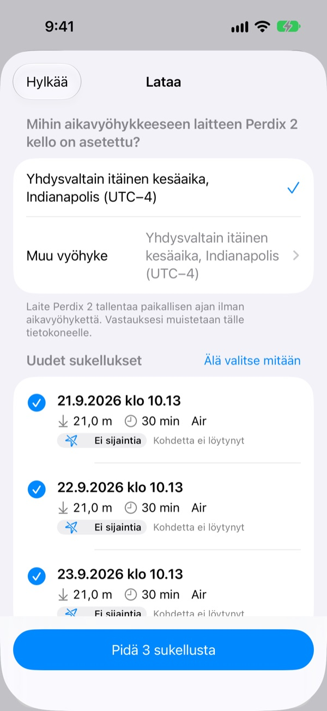
Shearwater Predator ja Petrel 1
Nämä käyttävät vanhempaa Bluetoothia (Bluetooth Classic), jota iPhone ja iPad eivät pysty käyttämään. Muodosta Macilla ensin tietokoneelle pari kohdassa Järjestelmäasetukset → Bluetooth ja valitse sitten latausikkunassa USB-kaapeli: sen portti voi näkyä luettelossa. Laita tietokone Bluetooth-siirtotilaan ja valitse Lataa. Tätä ei ole vielä kokeiltu oikealla Predatorilla tai Petrel 1:llä, joten lähetä latausloki, toimi se tai ei. iPhonella tuo niiden sukellukset sen sijaan Shearwater Cloudista tai UDDF-tiedostosta.
Tuetut tietokoneet
Thermocline lataa libdivecomputerilla, avoimen lähdekoodin kirjastolla, jota monet lokikirjat käyttävät. Se tuntee useita satoja malleja useimmilta valmistajilta. Nähdäksesi omasi avaa latausnäkymä ja valitse Tuetut tietokoneet; kunkin kohdalla kerrotaan, toimiiko se iPhonella ja iPadilla vai tarvitaanko Mac.
| Yhteys | Missä se toimii | Kokeiltu tähän mennessä |
|---|---|---|
| Bluetooth LE | iPhone, iPad ja Mac | Shearwater Perdix ja Perdix 2. Muiden mallien pitäisi toimia: kerro meille. |
| USB- tai sarjakaapeli | Vain Mac | Tehty, ei vielä kokeiltu oikealla laitteistolla. |
| Bluetooth Classic (Predator, Petrel 1 ja muut vanhemmat mallit) | Vain Mac, pariliitettynä sarjaporttina (ohjeet) | Ei vielä kokeiltu. |
| Garmin Descent (.fit-tiedostot) | Tuonti iPhonella, iPadilla ja Macilla (ohjeet) | Descent-sukellukset, myös virtasukellukset. |
Onko sinulla tietokone, jota emme ole kokeilleet? Auta meitä testaamaan sitä.
Vahvista kohde ja kaasut
Sukellukset, joilta yhä puuttuu kohde tai vahvistetut kaasut, odottavat kohdassa Tarkistettavat. Mikään ei estä niiden tallentamista; täydennä ne, kun haluat.
| Tehtävä | iPhone ja iPad | Mac |
|---|---|---|
| Löydä ne | Lokikirjan yläosassa kohdassa Tarkistettavat. | Siirry → Tarkistettavat (⌘2) |
| Vahvista | Avaa sukellus, valitse sitten Valitse kohde ja napauta Kyllä, nämä kaasut ovat oikein (tai Korjaa kaasu…). | Kunkin sukelluksen banneri tarjoaa vaihtoehdot Vahvista kohde ja kaasut…, Valitse kohde… tai Vahvista kaasut…. |
Thermocline ehdottaa kohdetta sukelluksen sijainnin perusteella: ensin omat kohteesi, sitten sisäänrakennetut listat yli 76 000 sukelluskohteesta ja hylystä, jotka toimivat offline.

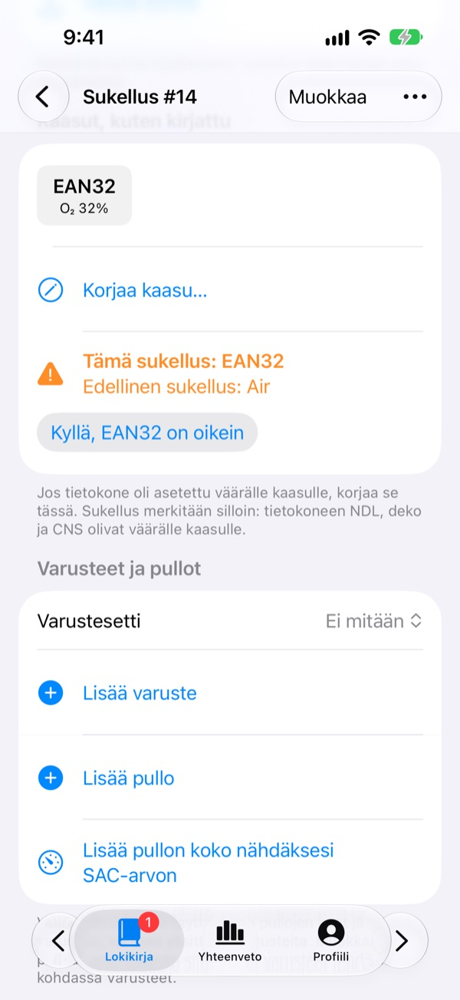
Lue sukellus
| Tehtävä | iPhone ja iPad | Mac |
|---|---|---|
| Lue mikä tahansa hetki | Vedä kaavion poikki. | Osoita kaaviota. |
| Kirjaa sukellus käsin | Lokikirja → Kirjaa käsin | ⌘N |
- Turvallisuusarvot ovat kiinteässä palkissa jokaisen sukelluksen yläosassa, aina samassa paikassa.
- Profiili: kaavion alla olevat painikkeet näyttävät tai piilottavat arvot Pullo, ppO₂, NDL, SAC, Lämp., CNS ja Nousu joko Allekkain-kaistoina tai yhtenä Päällekkäin-näkymänä. Painikkeen saa vain se, mitä sukellus tallensi. NDL on tietokoneen oma ja pysähtyy dekon ajaksi, jolloin punainen kaista näyttää pysähdykset. Kapealla iPhonella painikkeet pysyvät yhdellä rivillä ja vierivät sivuttain. Kokeile etusivulla.
- Suljetun kierron laitteet: minkä tahansa niitä tallentavan tietokoneen tai tiedoston osalta ppO₂-kaista näyttää setpointin yhdessä voted ppO₂:n kanssa (ja jokaisen kennon, jos tallennettu), ja lukema kertoo kyseisen hetken setpointin. Vaihto diluentista mihin tahansa muuhun kaasuun merkitään bailoutiksi.
- Kaasunkulutus: napauta tai napsauta SAC-arvon vieressä Miten? nähdäksesi kaikki lähtötiedot: pullon, sen vesitilavuuden, paineet, lämpötilan ja reaalikaasukorjauksen.
- Muokkaaminen: muokkaa mitä tahansa sukellusta. Korjaus säilyttää tietokoneen alkuperäisen lukeman.
- Painot: ensimmäinen +-napautus asettaa Ei painoja sukellukselle, jolla painoja ei ollut. Napauta siitä −, niin arvo tyhjenee.
- Linkit muistiinpanoissa: sukelluksen muistiinpanojen verkkolinkkejä voi napauttaa tai napsauttaa. Kun olet kirjoittanut, napauta näppäimistön yläpuolella Valmis: linkit näkyvät silloin, ja YouTube- tai Vimeo-linkki saa muistiinpanojen alle painikkeen Lisää videolinkkeihin: …. Kirjoittaaksesi muistiinpanoihin uudelleen valitse Muokkaa muistiinpanoja.

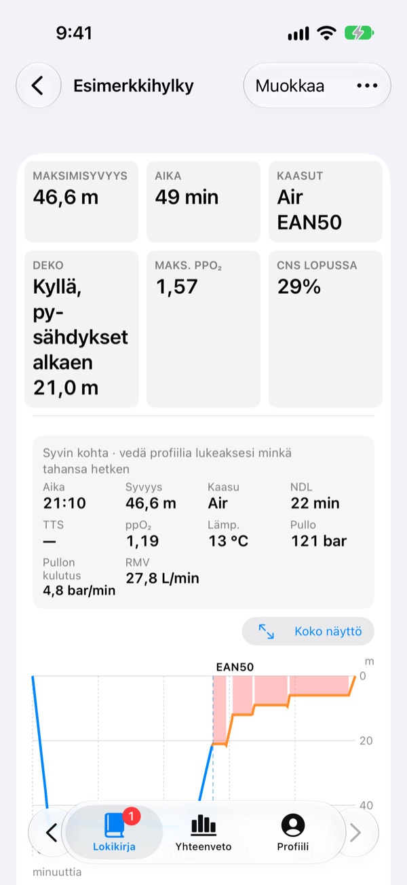

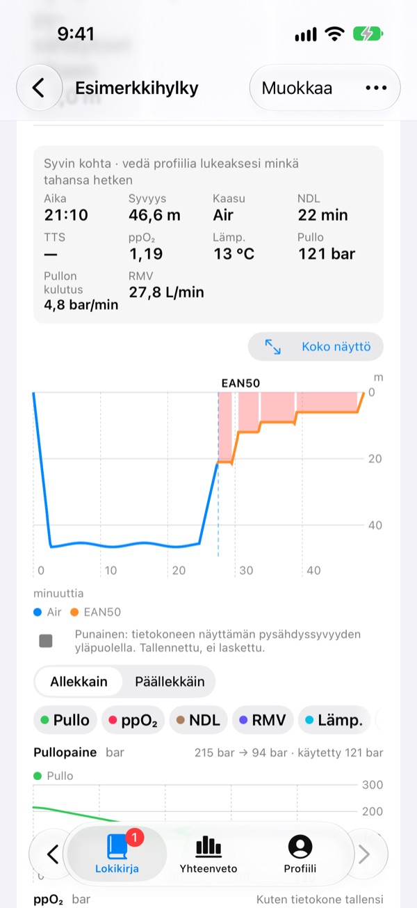


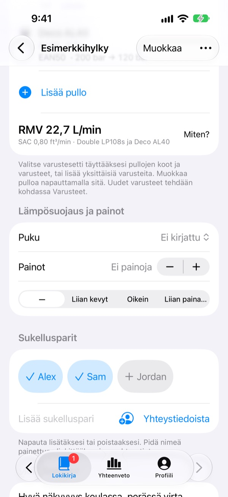

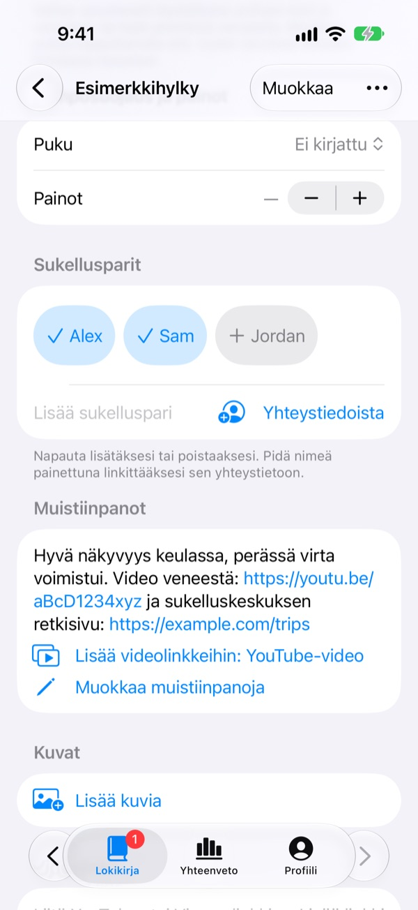

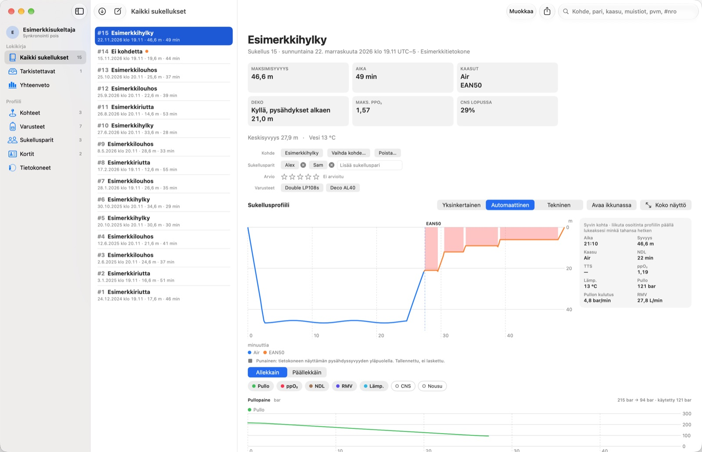
Kohteet, sijainnit ja Apple Watch
| Tehtävä | iPhone ja iPad | Mac |
|---|---|---|
| Lisää kohde | Profiili → Kohteet, sitten lisäyspainike: Etsi tai nimeä kohde tai Merkitse paikka tähän (GPS). | Siirry → Kohteet (⌘4), sitten Lisää kohde… |
| Näe kaikki listatut kohteet | Profiili → Kohteet → Kartta, sitten maapallopainike, tai loitonna kartta kokonaan nipistämällä sormet yhteen. Hylyt ovat oransseja, riutat ja sukelluskohteet sinisiä, omat kohteesi punaisia lippuja. | Kohteet, sitten työkalupalkin Näytä maapallo, tai loitonna kokonaan. |
| Etsi sijainti | Kohde, jolla ei ole sijaintia, tarjoaa vaihtoehdon Etsi sijainti: tarkista ehdotus kartalta, kirjoita koordinaatit tai pudota nasta. | Etsi sijainnit… käy läpi kaikki kohteet, joilla ei ole sijaintia, yksi kerrallaan. |
Apple Watch: merkitse paikka pinnalla, niin se odottaa iPhonessasi kohdassa Tarkistettavat. Katso Apple Watch.
Kohteiden sijainnit ovat kirjaamista varten, eivät navigointiin.

Apple Watch
Watch-sovellus tekee yhden asian: se merkitsee, missä olet pinnalla, jotta sukelluksen kohde on helppo kirjata. Se ei tallenna sukelluksia; ne tulevat sukellustietokoneeltasi. Se vaatii watchOS 11:n tai uudemman ja iPhonen, jossa on Thermocline.
| Tehtävä | Apple Watch | iPhone |
|---|---|---|
| Asenna | Se tulee iPhone-sovelluksen mukana. Jos se ei ole kellossa, avaa iPhonessasi Watch-appi, etsi Thermocline kohdasta Käytettävissä olevat apit ja napauta Asenna. Salli ensimmäisellä kerralla sijainti Thermoclinelle kellossa. | |
| Merkitse paikka | Avaa Thermocline pinnalla kohteen yläpuolella. Odota, että näkyy Hyvä sijainti, ja napauta sitten Merkitse paikka. Kello napauttaa rannettasi, kun paikka on tallennettu. | Paikka saapuu itsestään. Jos iPhone on kantaman ulkopuolella, paikka lähetetään, kun laitteet ovat taas yhdessä. |
| Nimeä se | Valinnainen. Napauta Lisää nimi merkitsemisen jälkeen tai myöhemmin kohdassa Merkityt paikat ja sano, piirrä tai kirjoita nimi, esimerkiksi "hylyn keula". Se tallentuu, kun lopetat. | Nimeä tarjotaan uuden kohteen nimeksi. Voit käyttää sitä tai valita toisen kohteen. |
| Vahvista se | Kellossa ei tarvitse tehdä mitään. | Lokikirja → Tarkistettavat. iPhone hakee paikan tiedot, kun se on verkossa, ehdottaa lähintä tunnettua kohdetta ja näyttää sukelluksen, johon paikka todennäköisimmin kuuluu. Vahvista tai hylkää se. |
| Tarkista, että se lähetettiin | Merkityt paikat näyttää jokaisen paikan tilan Lähetetty iPhoneen tai Odottaa lähetystä iPhoneen sekä kartan. Paikka poistuu kellosta, kun se on vahvistettu tai hylätty iPhonessa. | Vahvistettu kohde synkronoituu muihin laitteisiisi kuten mikä tahansa muu. |

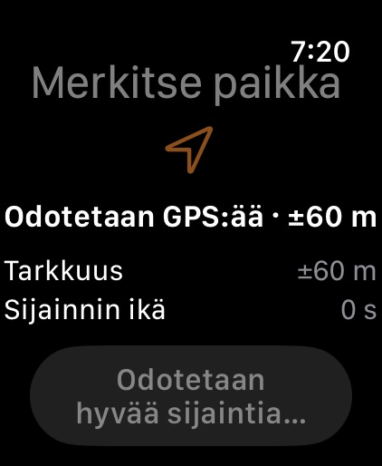

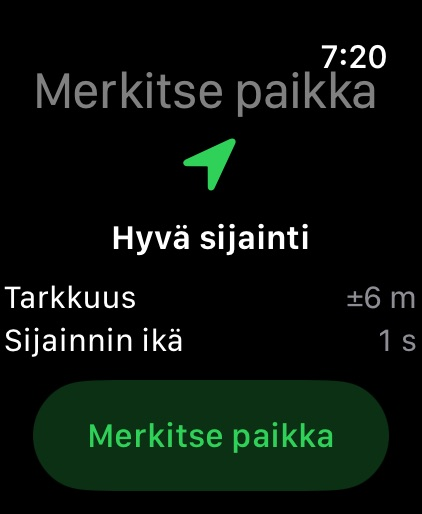

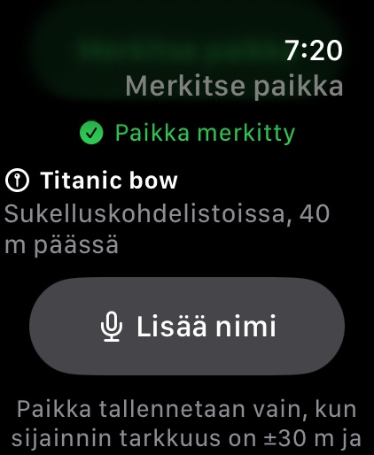

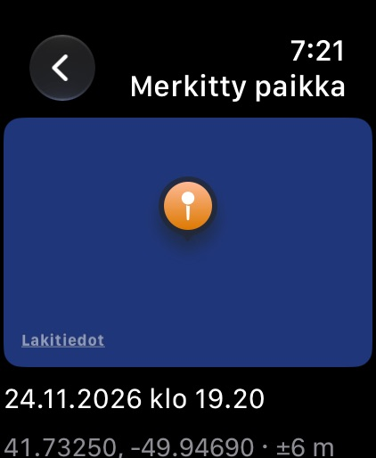
Kello tallentaa paikan vain sijainnista, jonka tarkkuus on ±30 m ja joka on alle 30 sekuntia vanha, ja se ohittaa vanhan välimuistissa olevan sijainnin. Merkitse paikka pinnalla, ei veden alla.
Kohteiden sijainnit ovat kirjaamista varten, eivät navigointiin.
Varusteet ja pullot
| Tehtävä | iPhone ja iPad | Mac |
|---|---|---|
| Avaa Varusteet | Profiili → Varusteet | Siirry → Varusteet |
- Pullon kohdalla Malli avaa pulloluettelon: hae valmistajan tai mallin mukaan (esimerkiksi "PST LP104") täyttääksesi sen julkaistut koot, tai kirjoita omat lukusi.
- Valitse Tuplat (yhdistetty pullopari) tuplapullosetille.
- Teräspullo, johon on leimattu +: laita päälle Plus-merkintä niin kauan kuin viimeisin painekoe säilytti +-merkinnän. Se näkyy esimerkiksi muodossa 2400+. Tämä kytkin näkyy, kun pullojen koot näytetään kuutiojalkoina.
- Kunkin sukelluksen pullot ovat sukelluksen kaasuosiossa (Lisää pullo, Varustesetti).
Yhdistä ja liitä sukelluksia
- Yhdistä on yhdelle sukellukselle, jonka kaksi tietokonetta tallensi. Molemmat tallenteet säilytetään, ja voit vaihtaa niiden välillä kaaviossa.
- Liitä on yhdelle sukellukselle, jonka lyhyt pinnalla käynti jakoi kahtia.
- Thermocline ei koskaan tee kumpaakaan itsestään. Kun se huomaa todennäköisen parin, lokikirjan yläosan banneri tarjoutuu tarkistamaan ne.
| Tehtävä | iPhone ja iPad | Mac |
|---|---|---|
| Tee se itse | Napauta Valitse, valitse kaksi sukellusta ja sitten Yhdistä tai Liitä. | Valitse kaksi sukellusta ja napsauta hiiren oikealla: Yhdistä nämä sukellukset… tai Liitä nämä sukellukset… |
| Muutitko mielesi | Kumoa heti, tai valitse sukelluksessa milloin tahansa Erota nämä sukellukset. | |
Kuvat ja videolinkit
- Lisää kuvia sukelluksessa kopioi ne kirjastostasi lokikirjaan.
- Säästääksesi iCloud-tilaa laita jokaisessa laitteessa päälle Synkronointi → Säästä iCloud-tallennustilaa sukelluskuvissa. Kuvat linkitetään silloin iCloud-kuviin kopioimisen sijaan, ja kirjastosi videoita voi lisätä. Thermocline pyytää Kuvat-käyttöoikeutta vain, kun laitat tämän päälle.
- Videolinkit: liitä YouTube- tai Vimeo-linkki sukelluksen kuvien alle. Vain linkki tallennetaan. Muistiinpanoissa jo olevan linkin voi lisätä sieltä (katso Lue sukellus).
- Sama video usealla sukelluksella: valitse sukellukset (iPhonella napauta ensin Valitse), valitse Muokkaa … sukellusta… ja lisää linkki kohtaan Videolinkit. Se lisätään jokaiseen valittuun sukellukseen, ja niiden jo olemassa olevat linkit säilyvät.
Yhteenveto ja hengitys
Yhteenveto-välilehti (Yhteenveto Macin sivupalkissa) laskee lokikirjasi: sukellukset vuosittain ja kuukausittain, syvyydet, kaasut, ennätykset, missä sukellat sekä eniten käytetyn kohteesi ja sukellusparisi. Valitse yläosasta aikaväli, esimerkiksi yksi vuosi, ja napauta mitä tahansa lukua tai pylvästä nähdäksesi sen takana olevat sukellukset.
- Hengitys näyttää SAC- ja RMV-arvosi kaikilta aikavälin sukelluksilta, joilla on pullon koko sekä alku- ja loppupaine, painotettuna ajalla ja syvyydellä. Napauta sitä nähdäksesi, mitkä sukellukset laskettiin mukaan.
- Joillakin tuoduilla sukelluksilla ei ole pullon kokoa, joten Hengitys voi aluksi olla tyhjä (katso Mitä MacDive-tiedostoa käyttää). Aseta pullot sukelluksillesi, Varusteissa tai kullakin sukelluksella, niin se täyttyy.

Synkronoi iCloudin kanssa
| Tehtävä | iPhone ja iPad | Mac |
|---|---|---|
| Laita synkronointi päälle | Profiili → Synkronointi | Thermocline → Asetukset → Synkronointi |
Kaikki samalle Apple-tilille kirjautuneet laitteet jakavat sen jälkeen yhden lokikirjan, joka tallennetaan omaan yksityiseen iCloudiisi. Offline-tilassa tehdyt muutokset odottavat laitteella ja lähtevät, kun laite on taas verkossa.
Synkronointi-osio näyttää tilan, kaiken kohdassa Odottaa lähetystä ja sen, täsmäävätkö tämä laite ja muut laitteesi. Synkronoi nyt tarkistaa heti.

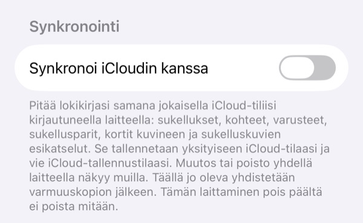
Vienti, palautuspisteet ja tyhjentäminen
| Tehtävä | iPhone ja iPad | Mac |
|---|---|---|
| Vienti | Profiili → Tietosi | Arkisto-valikko |
| Palautuspisteet | Profiili → Tietosi → Palautuspisteet | Asetukset → Tietosi → Palautuspisteet |
- Vienti: UDDF on täydellinen vienti ja tiesi ulos mihin tahansa lokikirjaan. Saatavilla myös: taulukko (CSV), MacDive XML, kirjanmerkit luolakartoitukseen (CSV) ja kokemusyhteenveto (teksti) kurssien esivaatimuksia varten.
- Palautuspisteet: sellainen tallennetaan ennen synkronoinnin käyttöönottoa, ennen suurta tuontia, yhdistämistä, liittämistä, tyhjentämistä ja ennen kuin mitään poistetaan. Palauttaminen tallentaa ensin nykyisen lokikirjasi palautuspisteeksi, joten voit kumota sen.
- Tyhjentäminen: Tyhjennä lokikirja… tarjoaa ensin vientiä. Kun synkronointi on päällä, muut laitteesi seuraavat perässä.

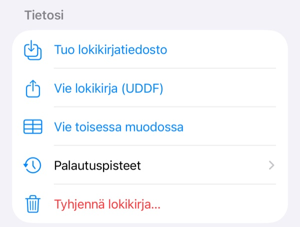
Vieläkin jumissa?
Katso Vianmääritys tai lähetä palautetta TestFlightista tai osoitteeseen brian@616labs.net.